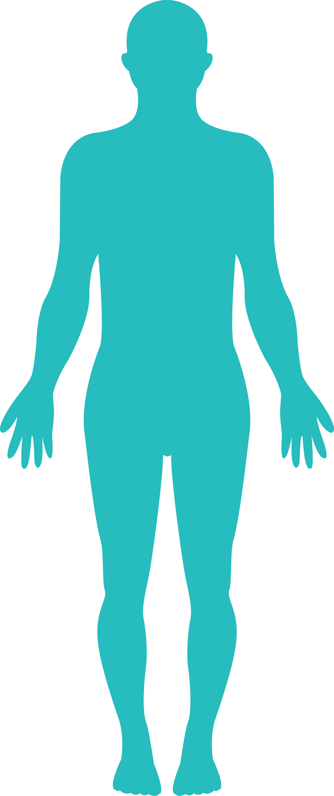
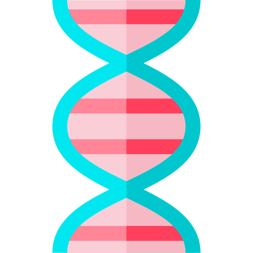

الدرس الثاني
الدرس الثاني
لما يُعد فقدان الوزن صعبًا للغاية؟
يدرك أي شخص حاول الالتزام بحمية غذائية مدى صعوبة فقدان الوزن. وقد تبين أن فقدان الوزن لا يحتاج إلى قوة إرادة أكبر أو سعرات حرارية أقل، بل توجد العديد من الأمور التي تساهم في فقدان الوزن، نذكر منها:
-

علم الأحياء البشري
يخزن جسمك الدهون بشكل طبيعي لتوفير الطاقة عند الحاجة إليها (فكر في وضع النجاة). وهنا تأتي الهرمونات التي تزود جسمك بإشارات لتناول المزيد من الطعام أو أنك لم تحصل على كفايتك من الطعام.
-

اختيارات الطعام
يدفعنا نوعان مختلفان من المنبهات لتناول الطعام: داخلية وخارجية. تأتي المنبهات الداخلية من نظام الجوع في جسمك باستخدام الهرمونات لتشعرك بإحساس الجوع. أما المنبهات الخارجية فتتمثل فقط في رغبتك في تناول الطعام أو ولعك به.
-

الجينات الوراثية
يزداد وزن بعض الأشخاص أسرع من غيرهم. ويمتلك بعض الأشخاص معدلاً أعلى لحرق السعرات الحرارية، مما لا يكسبهم وزنًا زائدًا على الإطلاق. كما قد تؤثر جيناتك الوراثية على ميل جسمك لتكوين الخلايا الدهنية وتخزينها. ولكن تذكر: لا تحدد جيناتك الوراثية مصيرك بنسبة 100%.
-

البيئة
يرتبط اكتساب الوزن بعوامل نمط الحياة. في الوقت الذي تنخفض فيه فرص ممارسة النشاط البدني، لا عجب في أن يصبح اكتساب الوزن شائعًا للغاية. كما تتوافر الأطعمة الخفيفة غير الصحية مثل رقائق البطاطس والحلوى في كل زاوية بالمتاجر. وتتسبب مطاعم الوجبات السريعة في صعوبة اختيار البدائل الصحية. وحتى على مواقع التواصل الاجتماعي، ستجد إعلانات الطعام التي تجذبك لتناول الأطعمة الغنية بالدهون والسكريات.
-

الضغط العصبي
يعد الضغط العصبي أحد أكثر الأسباب شيوعًا لزيادة الوزن. عندما نشعر بالضغط النفسي بسبب ظروف الحياة، نتعامل معها من خلال الأكل غير الصحي، معتقدين أن ذلك سيُشعرنا بالتحسن. وعلى الرغم من أنها قد تكون مُتنفسًا قصير المدى، إلا أن تناول الطعام بسبب الضغط العصبي قد يُسبب الشعور بالذنب ولا يعالج السبب الجذري للضغط العصبي.